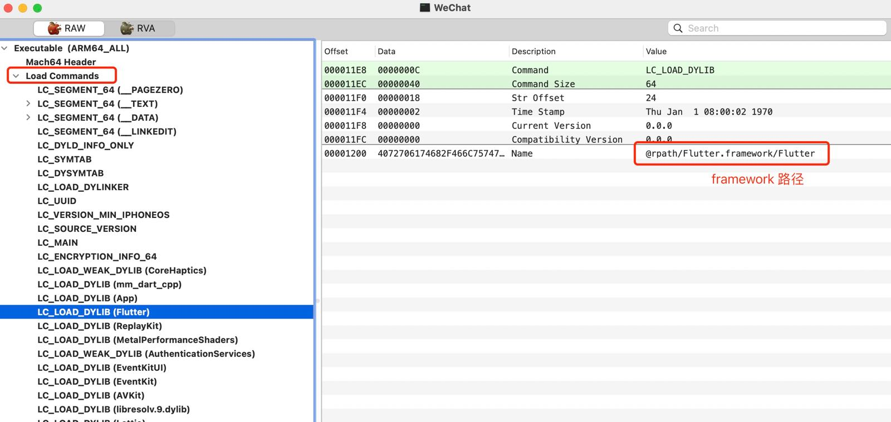
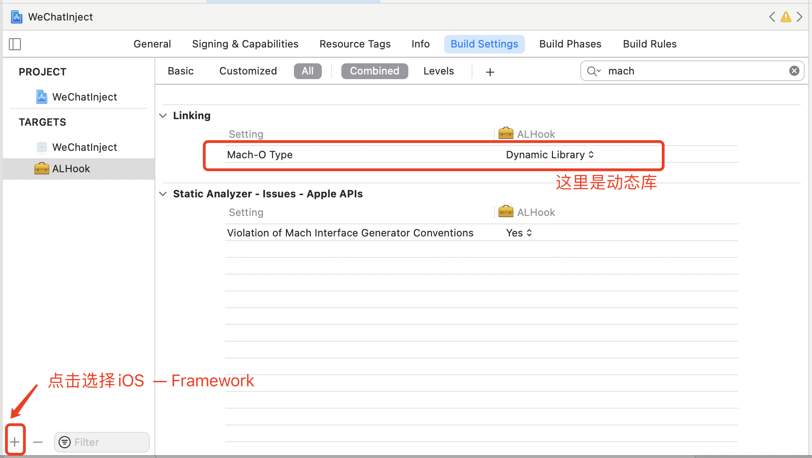
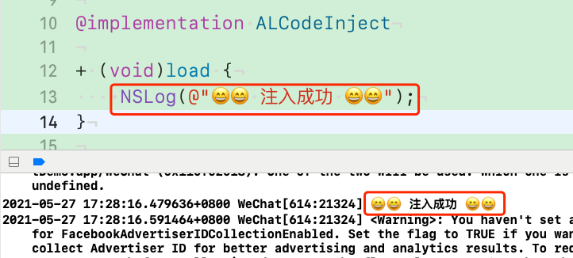
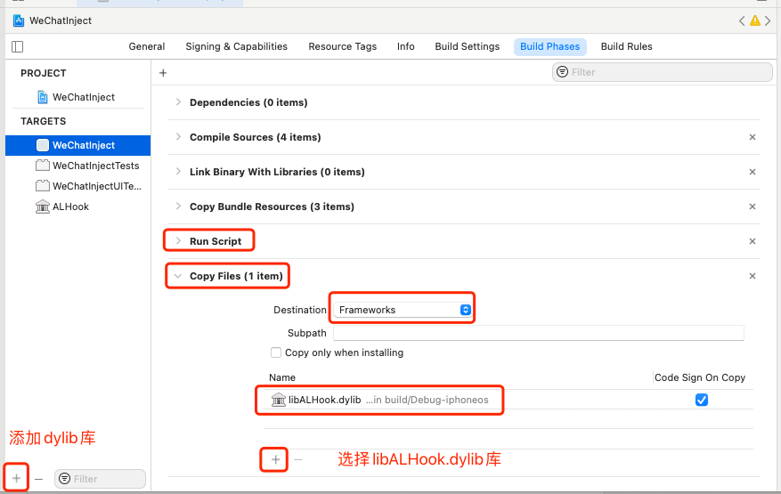
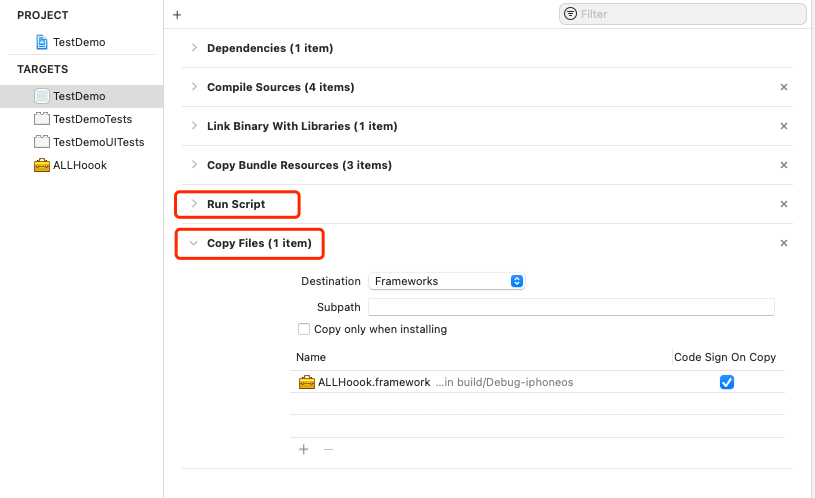
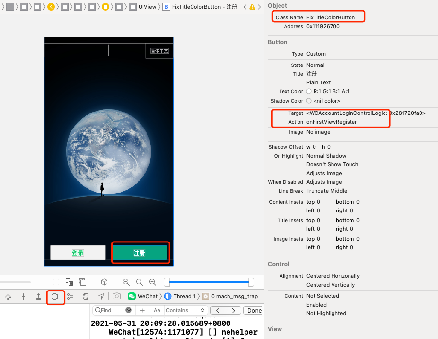
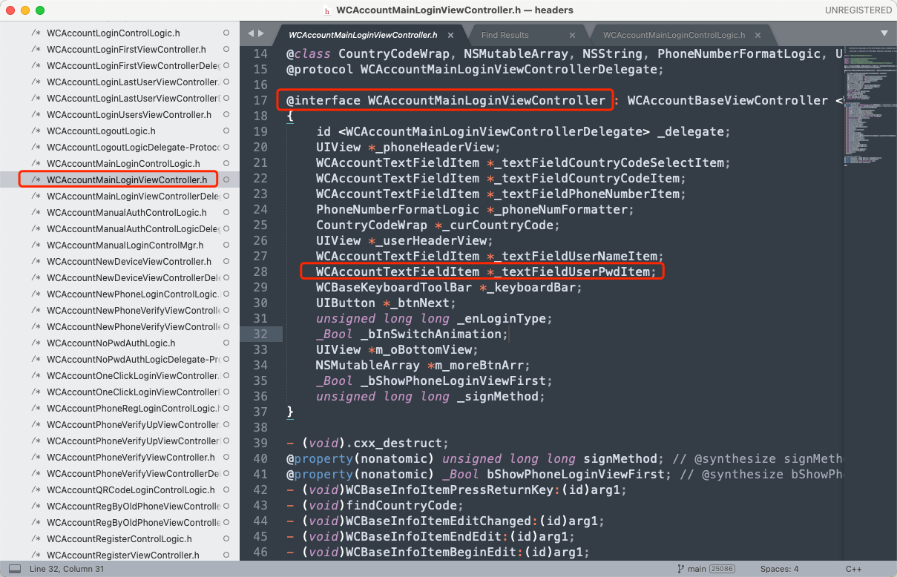

代码注入
我们按照上一章（应用重签名）的逻辑，先把程序跑起来。
然后再.app中显示包内容，查看可执行文件。这里我们使用MachOView工具进行分析，这里我们主要查看的是Load Commands。

Load Commands：加载命令。
在Load Commands里头，可以看到所有的Framework。点击每一个Framework可以看到这个Framework的执行路径。
Framework注入
创建动态库
在工程中选择
WeChat.xcodeproj，然后在工程配置页面，选择左下角的加号”+“ -> ”iOS“ -> search ”Framework“。
创建一个类，添加
+(void)load方法，打印一串字符串。1
2
3+ (void)load {
NSLog(@"\n\n hock success...\n\n");
}
- 重新运行工程（使用重签名）。这个时候我们的
NSLog并不会执行，因为并没有链接到可执行文件。
然后在项目工程`project` -> `show in finder` -> 找到对应的APP -> 显示包内容 -> Framework文件夹。可以看到我们添加的ALHook.framework。
然后重新用`MachOView`工具打开可以执行文件（需要这个可执行文件），看看是否有链接ALHook.framework。这里是没有的。链接动态库
通过yololib工具修改Mach-O文件，目的就是链接我们添加的动态库。
把yololib工具放到我们的工程文件中，与appSign.sh文件同级。然后把上面debug的可执行文件也同样复制过来。
然后执行下面的命令。
1 | $ ./yololib [可执行文件] Frameworks/[添加的动态库].framework/[添加的动态库的可执行文件] |
执行完命令之后，重新使用MachOView工具打开可执行文件。

重新压缩，打包ipa文件
- 重新解压
8.0.2.ipa文件。 - 替换
Payload/xx.app -> 显示包内容中的可执行文件，把上一部链接好的可执行文件做替换。 - 重新压缩
$ zip -ry WeChat.ipa Payload/。 - 把压缩后的ipa包重新放在工程目录APP文件夹下。
重新运行
这个时候重新运行，就可以看到我们的NSLog了。

dylib注入
我们按照上一章（应用重签名）的逻辑，先把程序跑起来。
创建dylib
然后选择target -> “+” -> “macOs” -> 搜索”library” -> 选择”Library”，命名为”ALHook”。步奏与创建动态库类似。
修改ALHook
在ALHook -> “Build Setting”中配置
- base sdk改为
iOS - code signing identify 改为
iOS Developer
然后再文件中添加load方法，注入代码输出一串文本。
添加依赖 Copy Files
在当前工程中拷贝dylib。

这里需要注意的是，run script的顺序一定是在Copy Files上的，因为如果顺序反了，会导致最后才执行脚本。则把copy的dylib文件给重新覆盖掉，因为脚本文件执行的是app替换。
使用脚本执行
在上方动态库中我们是手动使用/.yololib工具进行链接的，这里我们使用脚本，在原来的appSigh.sh文件末尾添加一句代码：
1 | # 链接手动添加的库，做代码注入 |
直接运行
直接运行代码，可以在Framework中看到libALHook.dylib文件。
运行成功之后，可以看到我们的输出。
代码注入流程总结
- Framework手动注入，是为了熟悉原理，真正操作的时候我们使用的都是脚本文件，从繁到简。
- Framework流程：
- Xcode新建Framework。
- 通过yololib工具是Mach-O文件链接Framework文件。
- 所有的Framework加载都是由DYLD加载进入内存被执行的
- 注入成功的库路径会写入到Mach-O文件的
LC_LOAD_DYLIB字段中
- dylib注入流程：
- Xcode新建
dylib库，然后修改”Build Setting”- base sdk改为
iOS - code signing identify 改为
iOS Developer
- base sdk改为
- 添加依赖，
Copy Files将dylib文件拷贝到APP包中 - 通过yololib工具链接dylib文件。
- Xcode新建
这里需要注意的是，顺序不能错误，如下图：

真正的代码注入
我们使用Framework的形式进行注入。因为比较方便，dylib需要修改一些东西。
这里也直接使用dylib中使用脚本的方式进行注入。
Debug View Hierarchy调试

我们看一下图片上的内容，通过Debug View Hierarchy的方式，先获取到我们想要的东西。
这里可以看到注册按钮的相关信息：
- 是一个
FixTitleColorButton的类，应该是封装的Button - 指定的target是
WCAccountLoginControlLogic。 - 相应的action是
onFirstViewRegister。
能拿到这些信息，就可以直接通过runtime的方法替换就可以直接修改了。
1 | + (void)load { |
这就把原来的注册方法给替换掉了，点击注册会输出者一串字符。
接下来我们要在点击登录时，拿到用户密码，并且不影响正常的登录流程。
class-dump工具
如果我们通过使用上面的方式，可以轻松的拿到用户名和密码，但是这是通过响应链一层层的去找的，所以也就有了这么个工具，可以直接输出OC中的类、方法、属性等内容。
把WeChat的可执行文件拷贝出来，和class-dump工具放在相同目录中(也可以是其他目录)，然后执行下述命令，可以输出所有的header文件。
1 | $ ./class-dump -H WeChat -o ./headers/ |
然后我们通过Debug View Hierarchy找到对应的账号密码登录页面，查看页面的class和文本框的class，进一步在输出的头文件中找。

我们用同样的方式继续找WCAccountTextFieldItem。发现在WCBaseTextFieldItem有一个WCUITextField，继承自UITextField也就是我们要找的文本框。
在通过Debug View Hierarchy找到登录的点击事件。为onNext。能拿到这些信息，就可以操作了。
1 | +(void)load { |
注意，这里是在原来的WCAccountMainLoginViewController类中添加方法，而不是用注册时的那种方法，是因为会造成crash，因为使用的是exchange方法交换，在WCAccountMainLoginViewController类执行new_onNext方法时找不到对应的方法。
这种是使用class_addMethod在WCAccountMainLoginViewController中添加了一个方法。接下来我们使用setImp和getImp的方式。
1 | +(void)load{ |
这种方式相对比较清晰，然后重新运行就好了。
总结
通过Framework、Dylib注入
- Xcode自动打包Framework进入app包
- macho中load commands里需要有 LC_LOAD_DYLIB字段
- DYLD加载我们创建的Framework
- MethodSwizzle - Runtime中也是重点
- exchange函数交换SEL和IMP的对应关系
- 这种方案有可能会造成crash。因为没法调用原来的方法。
- 解决方案：
- 添加方法列表，然后exchange或者replace
- getImp、setImp配合使用
- exchange函数交换SEL和IMP的对应关系